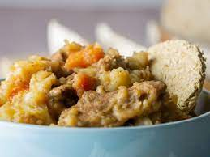

Stovies

What Exactley Is Stovies??
Stovies has been around from the very birth of the scottish nation, a mixture of potatoes, ground beef and carrots that fuelled the picts to defeat the evil Romans.
Ingredients
- Potatoes
- Ground beef
- Carrots
Steps
- Cut potatoes into medalions, boil until nearly cooked, set aside.
- Brown ground beef, then add beef stock, diced carrrots and boiled potatoes. Simmer for 45 mins.
- EAT